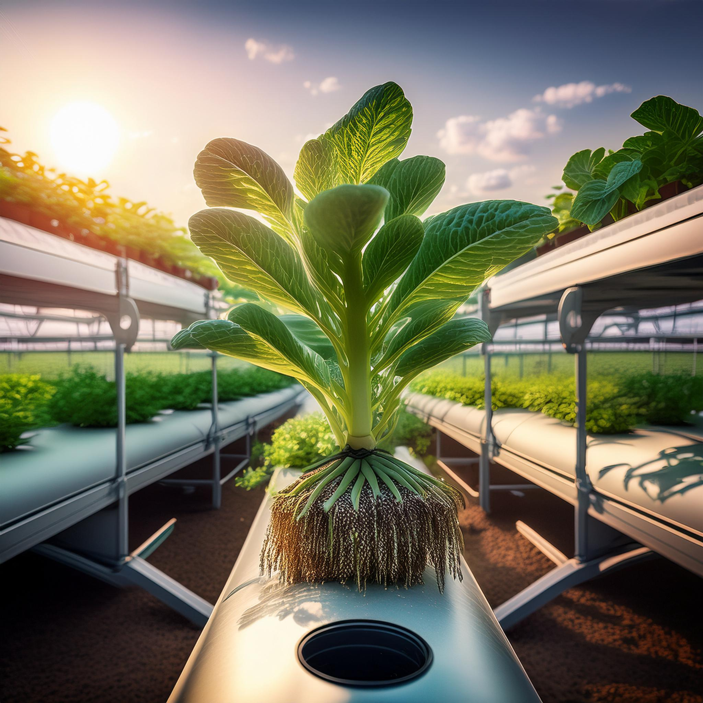
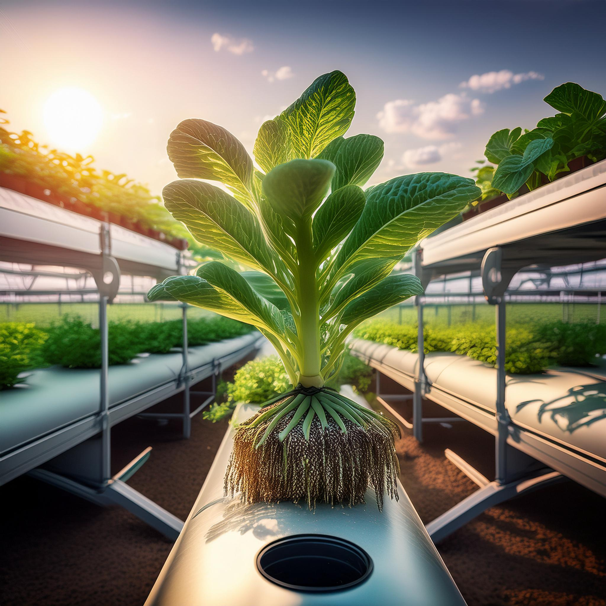

Hydroponics
Hydroponic farming is a method of growing plants without soil, using water solutions rich in nutrients. Here are some key points: Principle: Growing plants in nutrient-enriched water instead of soil. System: Using artificial mediums such as rockwool or clay pebbles to hold plant roots. Nutrition: Providing precise and controlled nutrient delivery directly to the roots. Advantages: Water conservation, faster growth, and better control of growing conditions. Applications: Particularly suitable for growing leafy vegetables, tomatoes, cucumbers, and herbs. Environment: Allows food production in urban environments and areas with limited soil. Challenges: Requires high initial investment and technical knowledge for optimal operation.
Hydroponic cultivation offers significant advantages in terms of sustainability and global food security. This method enables food production in densely populated areas, such as large cities, and in regions with extreme climate conditions or infertile soil. It significantly reduces water usage (up to 90% less compared to traditional agriculture) and prevents soil and water pollution from fertilizers. Additionally, hydroponic farming allows for year-round food production, independent of seasons or weather conditions. However, the main challenges include the high cost of setting up hydroponic systems, the need for energy for lighting and climate control, and the risk of technical failures that could affect the entire crop. Nevertheless, with advancing technology and decreasing costs, it is expected that hydroponic cultivation will play a more significant role in the future of global food production.
 
